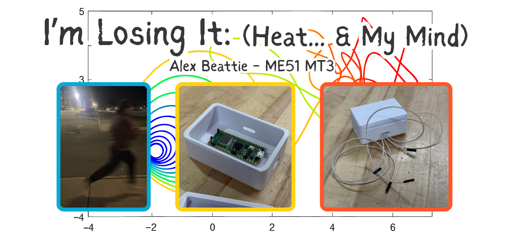
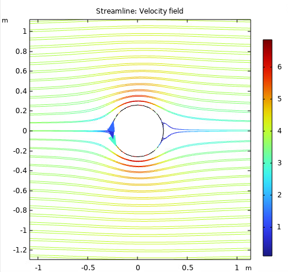
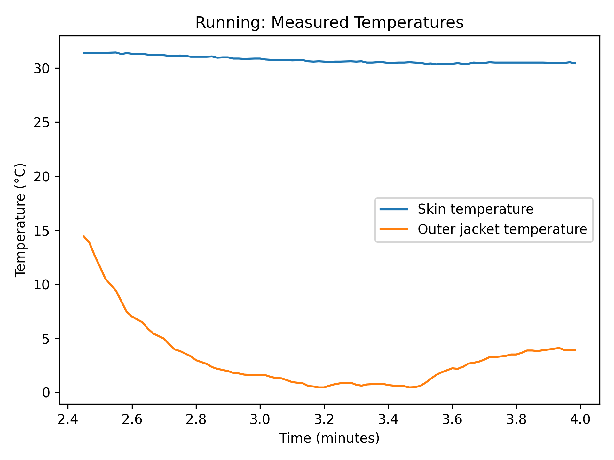

Jacket Heat Loss: Model + COMSOL + Experiment
Thermal Fluid Systems II — How much heat do you lose standing still vs running on a cold day?
I modeled heat loss through a winter jacket using a thermal resistance network, then compared it to a COMSOL setup exploring airflow-driven convection. To ground it in reality, I loaded up my jacket with thermistors on both sides and logged temperature data outside in the cold, both standing still and while running. The most interesting part for me was reconciling where the model, simulation, and measurements agreed, and where they didn’t.




Quick project description
Built an analytical heat transfer model to estimate heat flux through my jacket and predicted inside/outside surface temperatures for standing still and running. Then I built a COMSOL simulation for comparison and validated with measurements using thermistors (calibrated + filtered) placed on both sides of the jacket while outside in the cold.
Longer project description
The assignment was to take a real scenario (running in the cold with a jacket) and quantify it using multiple methods — not just compute an answer, but build assumptions, test them, and explain what changes between standing still and running.
I modeled conduction through layers (skin/air gap/jacket) and convection to ambient air, then compared predictions to a COMSOL setup focused on airflow-driven convection behavior. Finally, I collected real temperature data by placing thermistors on the inside and outside surfaces of the jacket while standing outside and while running.
Iterative design process
- Frame the problem: define what “heat loss” means here (heat flux) and what we can directly measure (surface temperatures).
- Build an analytical model: thermal resistance network + estimated properties + convection assumptions for standing vs running.
- Find what dominates: the trapped air layer is a major driver of insulation performance.
- Simulate in COMSOL: started broader, then simplified to focus on external convection behavior under time/convergence constraints.
- Collect data: calibrate thermistors, filter noise, log inside vs outside temperatures for both cases.
- Compare + interpret: use the disagreement between methods as information, not failure — assumptions show up fast in convection problems.
Analytical model (medium math, big intuition)
I modeled the jacket as a series of thermal resistances: conduction through layers plus convection to ambient air.
Key insight
The air gap inside the jacket contributes more thermal resistance than the jacket material itself. In practice, insulation performance is heavily influenced by how well you trap still air.
I compared:
- Standing still: natural convection on the outside surface
- Running: forced convection from increased relative wind speed
The model predicts a noticeable increase in heat flux when running because the outer convection coefficient increases quickly with velocity.
COMSOL simulation (engineering tradeoffs)
I used COMSOL to explore airflow and the resulting convection behavior, then compared it to my analytical assumptions. I initially tried a more complete multiphysics setup, but with a tight timeline I ran into convergence/complexity issues.
I simplified the simulation to focus on external forced convection so I could still extract useful trends and use the simulation as a comparison tool.
How I interpret COMSOL in the comparison
In this project, the simplified COMSOL setup behaves like an upper bound on heat loss because it doesn’t fully represent insulation from the air gap and jacket layers. That mismatch is useful; it highlights which resistances matter most, and where modeling detail actually changes the answer.
Experimental validation
To validate the predictions, I placed thermistors on both sides of the jacket and logged temperature data while standing outside and while running. The setup was scrappy (tape + wires + cold air + movement), but it produced a measurable temperature gradient that could be compared against the models.
The hardest part was sensor accuracy. The thermistors were cheap and high-tolerance, so raw readings weren’t meaningful without calibration. A lot of the work went into making sure the data was trustworthy enough to compare.
Data pipeline
- Calibration: use temperature reference points to map thermistor readings to actual values
- Cleanup: simple filtering to reduce noise without over-processing the signal
- Logging: time-stamped inside vs outside surface temperatures for both trials
- Comparison: use measured ΔT to estimate heat flux and compare to analytical + COMSOL predictions
The experiment made it clear how sensitive convection problems are to boundary conditions, thermal contact quality, and environmental variability.
Results + what the comparison actually means
While the analytical model, COMSOL simulation, and experimental data didn’t perfectly align (and weren’t expected to), the comparison was still valuable for understanding which assumptions mattered and where the model was strong vs sensitive.
- Analytical model: grounded estimate + makes dominant resistances obvious
- COMSOL: visualization + convection behavior + sensitivity to assumptions
- Experiment: real work check; shows how sensor limits and messy boundary conditions affect what you can conclude
Main takeaway
In heat transfer (especially convection), the “answer” is only as good as the assumptions and boundary conditions behind it. Comparing methods is what turns the result into something you can trust.
Engineering skills used
Heat transfer modeling
Thermal resistance networks, conduction vs convection reasoning, and building a readable model from assumptions.
Simulation (COMSOL)
Setting up and interpreting a multiphysics model, and simplifying responsibly under time/convergence constraints.
Experimental instrumentation
Thermistors, calibration, and designing measurements that connect back to model outputs.
Data acquisition + processing
Logging, filtering noisy sensor data, and extracting useful comparisons from imperfect measurements.
Conclusions
This project was a good reminder that engineering isn’t just making a perfect analytical model or perfect simulation, but rather it’s making assumptions, testing reality, and being able to explain what changes the result. The most useful outcome was learning where the model is strong, where it’s sensitive, and what the data can (and can’t) support.
If I had more time / budget
- Go harder on COMSOL: build a simulation I’m prouder of that better matches the analytical model structure
- Better experimental data: higher-quality sensors, better thermal contact method, and a cleaner wearable setup
- More controlled testing: repeat trials + improved estimates for wind speed and convection conditions